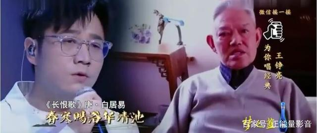

经典咏流传：长恨歌
作者：寻古韵华风百家号
2016年某日在某易听音乐时，收到了这首歌的推荐，看了评论之后，这首歌就走进了我的心里。之后便是数天无数次的循环，忆起上学时对白居易这首《长恨歌》费心背诵，心想如果早可以遇到王之炀老人这样唯美上口的乐府曲调，不知要省下多少时力就可以朗朗颂出。诗词与乐曲的力量就是这么强大，可以将复杂的东西简单化，拗口可以上口，淡漠可以温暖。近期看到某期《造梦者》的时候，正好有王之炀老人与大家的故事在里面，于是伴着眼泪，合着齐唱，将故事敲在键盘上。
2014年，一则微博触动了很多人的心，王之炀老人的外孙女为自己年迈八旬身患肝癌的外公寻求编曲与歌手。王之炀老人我国最早一批研究X光放射治疗方法的医学专家之一。王老小时候的国文老师是考过清朝科举的秀才，教过一些乐府诗词的曲调。王老对古代诗词文化及音乐文化有着浓厚兴趣，因此即便是被确诊为肝癌的日子里，老人对这些曲调也不肯相忘，躺在病床上凭借颤抖的双手点滴记录词曲，用微弱的声音吟唱。老人的外孙女及家人希望有人能按照这个曲调进行翻唱，作为对老人的加油和鼓励。
一时间，这则微博被置顶起来，也顶进了很多人的心里。无数有识之士参与其中，他们不为钱帛名利，只为对老人的祝福与支持。姚晨也加入了转发关注的队伍。
传唱的背后更有无数感动的故事。众多网络古风唱将和热心人士用各种版本演绎制作翻唱转发这首古曲，更有身患白血病却坚强的小女孩带着插管为老人放声而唱。他们以实际行动表达了发自内心的真诚，爱与祝福。老人将国文老师的曲调传承了下来，大家将外孙女和家人对老人的爱接力了下来，也将这一份文明文化传承了下来。
这期讲述王之炀老人的《造梦者》中，无论是演唱者干净纯粹的歌声、悦耳的笛音和绕指柔的琵琶旋律，还是突然衔接上的这位和蔼可亲的老人唱段画面，直至最后热心人士霎时同台合唱。每一个桥段都足以令人泪奔，那是爱的凝聚，光的照耀。在后台王老亲人含泪的目光中，我看到也感受到了回忆和感动。其实，那时老人已经离世，节目组及演唱者悉心安排了老人唱段画面，并由现场演唱者为其伴唱，这种融合演绎了一场跨越时空的《长恨歌》，加深了我们对这位老人的怀念。屏幕上滚动播放的老两口由年轻相伴至老的照片，瞬时间溢满了我的心，如同自己的长辈一般。我能感受到二老的恩爱乐观相濡以沫，父慈子孝、母贤女淑以及整个大家庭的和谐美满。
我想正是因为老人及家人的正能量，才会得到更多人的共鸣。2018年王铮亮在央视的《经典咏流传》中，献唱了为王老创作的《一生一阙歌》。与王老在屏幕上的隔空伴唱的片段再次成为引人泪目的经典。

正如姚晨所说：“他们会让我们始终相信美好也是发自人本心的，这个世界会因为他们变得更好”。 万物的联系也是如此奇妙，音乐可以传递和表达爱，爱也会音乐变得更加温暖有感情。网络可以让社会变得更加温暖，给予了很多人力量；而很多人也在通过网络传播正能量，给予他人温暖和力量。感谢拥有爱和正能量的人，温暖了很多冰冷的心。与人玫瑰，手有余香。